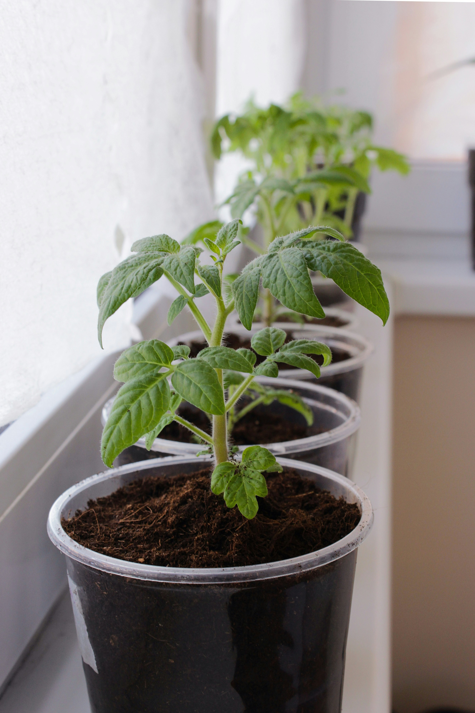
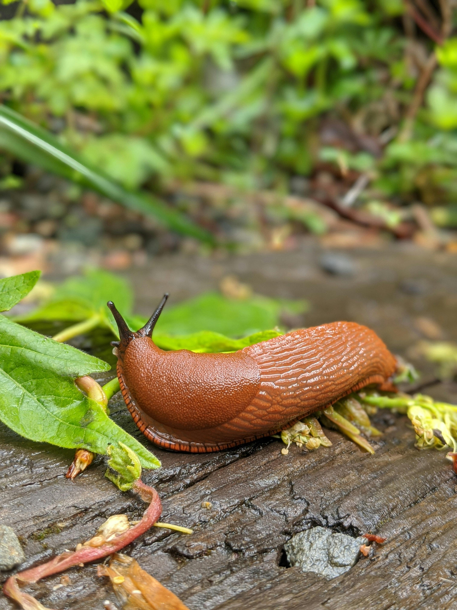
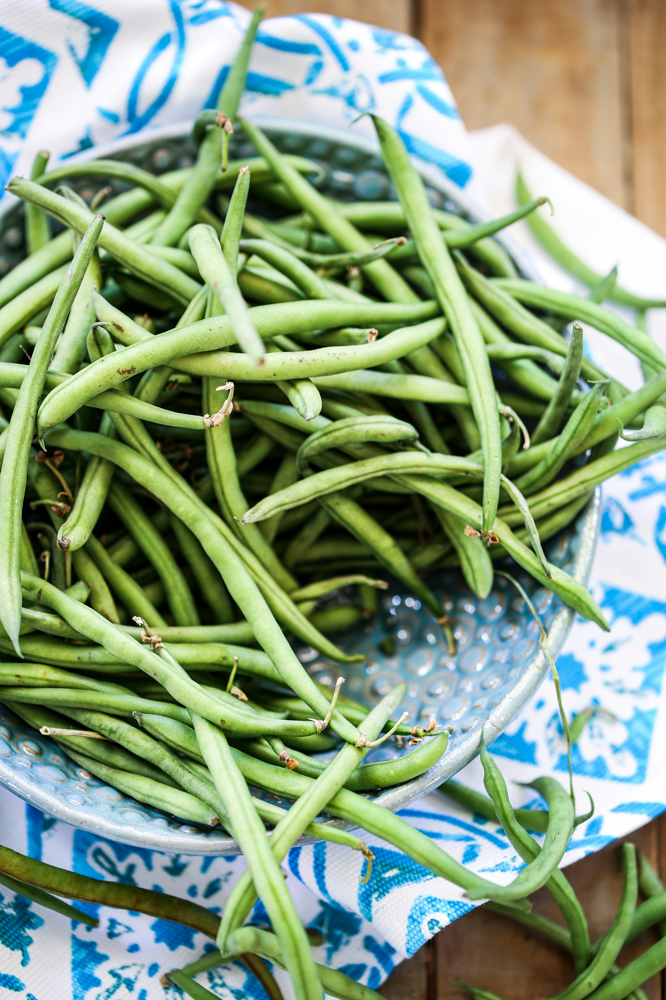
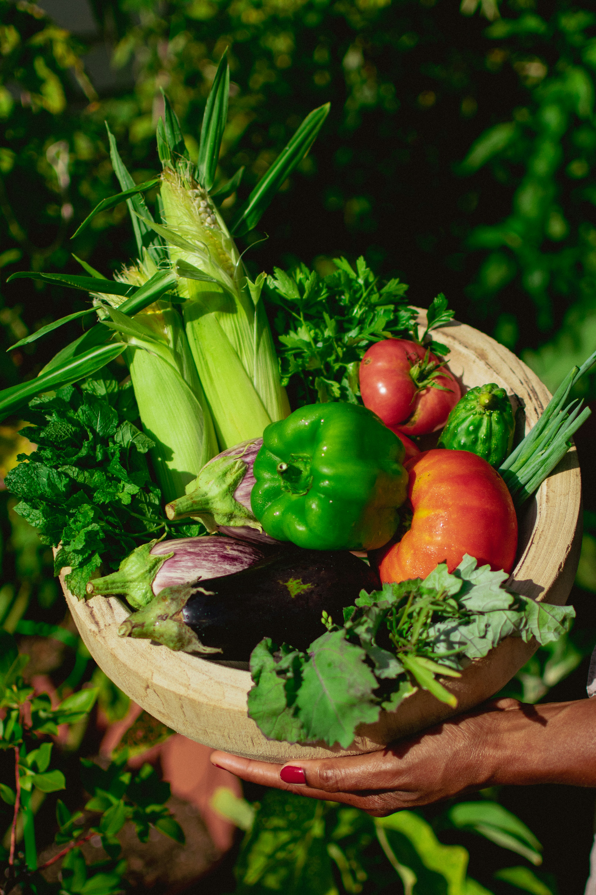
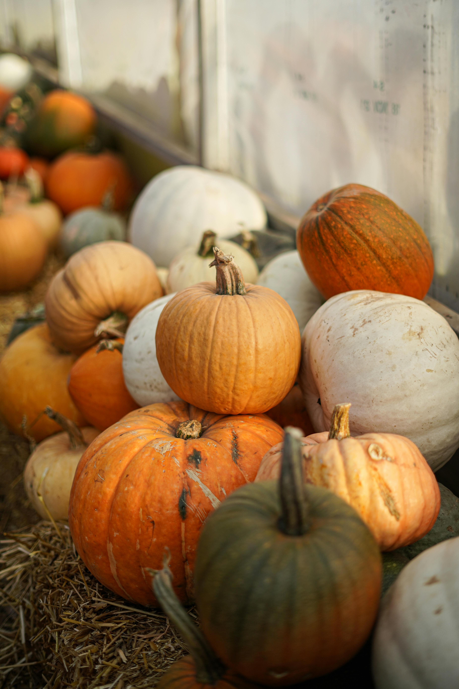
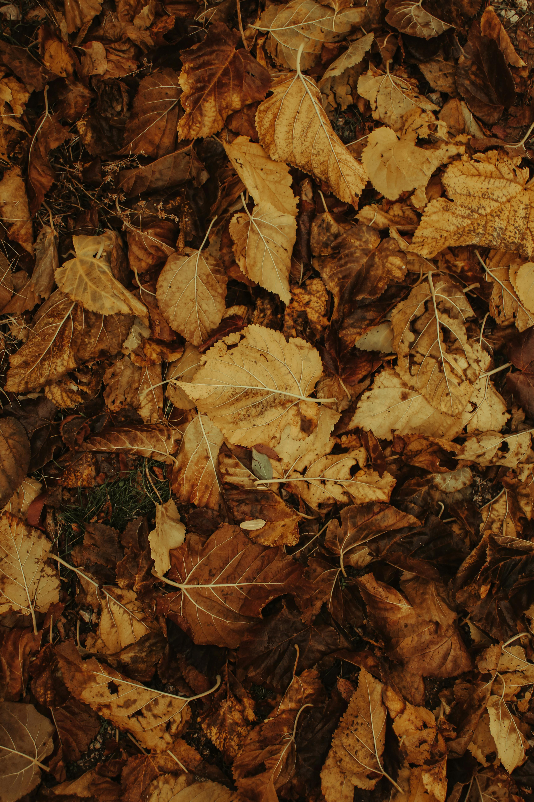

En odlingskalender hjälper dig att förbereda och planera så att du kan få skörd av blommor, kryddor eller grönsaker året om. Med hjälp av en odlingskalendet får du struktur och det blir lättare att så, skörda och ta vara på månadernas möjligheter. Anpassa tipsen till ditt klimat, dina förutsättningar och växtzon.
Januari

Det är nu du lägger grunden för årets odling. Bläddra i frökataloger, planera bäddarna och se över vad du har kvar från förra året.
Att göra:
- Planera odlingsyta, växtföljd och grödor.
- Rensa i frölådan och kolla hållbarhet.
- Beställ fröer, potatis och lökar.
- Så chili och paprika inomhus (tidiga sorter).
Februari

Ljuset börjar återvända och det är dags att sätta fart på förodlade växter.
Att göra:
- Så tomat, aubergine, kål och blomsterluktärt inomhus.
- Fortsätt förodla lök och purjo.
- Förbättra jorden i odlingsbäddar med kompost.
- Förbered växthus eller drivbänk.
Mars

Nu börjar odlingssäsongen på riktigt. Mars är perfekt för att så inomhus och förbereda jord utomhus om vädret tillåter
Att göra:
- Förodla chili, paprika, purjolök, selleri och kronärtskocka.
- Förgro potatis i ljus och sval miljö.
- Plantera om växter som stått svalt över vintern.
- Rengör odlingskrukor och sålådor.
April
Vädret kan variera väldigt mycket i aprilk, men det går att börja odla utomhus under fiberduk eller i växthus. Inomhus är det dags att börja så sommarblommor.
Att göra:
- Så spenat, sallat, morot och rädisor på friland.
- Förodla sommarblommor som tagetes, lejongap och zinnia.
- Plantera ut förgrodd potatis om jorden är varm.
- Skydda sådden med fiberduk mot kyla och skadedjur.
Maj

Maj är den stora planteringsmånaden! När risken för frost är över kan de flesta växter flytta ut.
Att göra:
- Plantera ut tomater, squash och majs (vid riskfri nattfrost).
- Så direkt på friland: bönor, dill, persilja, rödbeta, ärtor.
- Gödsla och vattna regelbundet.
- Börja kupning av potatis.
Juni
Nu växer det för fullt! Ogräs och skadedjur trivs också – så var uppmärksam.
Att göra:
- Vattna tidigt på morgonen eller sent på kvällen.
- Skörda tidiga grödor: rädisor, spenat, sallat.
- Tjuva tomater och bind upp höga plantor.
- Täckodla och fortsätt gödsla.
Juli
Mitt i sommaren är det dags att börja skörda, men även så för en andra skörd i slutet av säsongen.
Att göra:
- Skörda lök, vitlök, bönor och sallat.
- Så sensommargrödor som spenat, sallat, rädisa och kålrabbi.
- Beskär fruktträd (JAS-perioden börjar).
- Fortsätt tjuva, gödsla och vattna.
Augusti
 Augusti är tid för sensommarsådd & skörd,
hösten närmar sig men det är inte för sent att så nytt och skörda stort.
- Skörda potatis, morötter, rödbetor, squash.
- Så vintersallat, spenat och asiatiska bladgrönsaker.
- Torka kryddor eller frys in örter.
- Förbered ny odlingsyta för höstplantering.
September

Hösten är här och det är dags att tänka på lagring, konservering och jordförbättring.
Att göra
- Skörda sista potatisen, pumpa, kål och rotfrukter.
- Sätt vitlök för nästa säsong.
- Plantera perenner och fruktträd.
- Täck jorden med löv, kompost eller gräsklipp.
Oktober
Oktober är vilans början för trädgården, men det finns fortfarande arbete att göra för att nästa säsong ska bli bra.
Att göra
- Rensa bort plantrester och lägg på komposten.
- Täck odlingsbäddar mot ogräs och näringsläckage.
- Rengör redskap och ställ undan krukor.
- Sätt höstlökar för vårblomning.
November
Nu är det dags för vinterförberedelser, det mesta ligger i vila men det går att så vissa växter fortfarande.
Att göra
- Vinterså i lådor eller direkt i bäddar: morot, persilja, spenat.
- Täck bäddar med löv eller halm.
- Rengör växthus och odlingstunnlar.
- Planera kommande säsong.
December